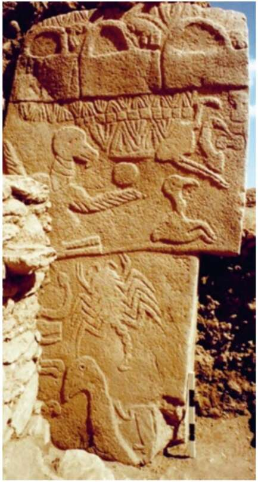

13. Opposite: The remains of a monumental structure from G6bekli Tepe. Right: One of the decorated stone pillars (about five metres high). Why would a foraging society build such structures? They had no obvious utilitarian purpose. They were’ neither mammoth slaughterhouses nor places to shelter from rain or hide from lions. That leaves us with the theory that they were built for some mysterious cultural purpose that archaeologists have a hard time deciphering. Whatever it was, the foragers thought it worth a huge amount of effort and time. The only way to build Gobekli Tepe was for thousands of foragers belonging to different bands and tribes to cooperate over an extended period of time. Only a sophisticated religious or ideological system could sustain such efforts. Gobekli Tepe held another sensational secret. For many years, geneticists have been tracing the origins of domesticated wheat. Recent discoveries indicate that at least one domesticated variant, einkorn wheat, originated in the Karacadag Hills — about thirty kilometres from
